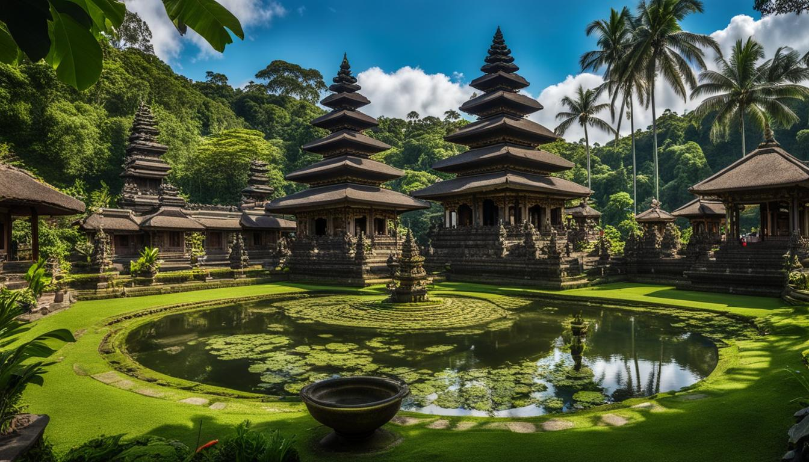
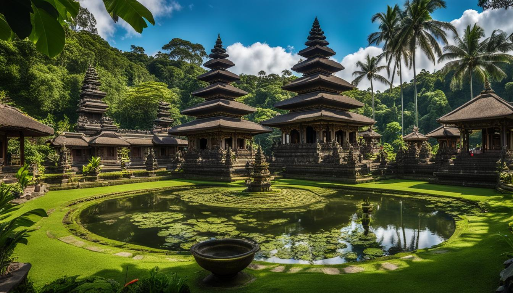

Bali
Bali, often referred to as the "Island of the Gods," is a stunning Indonesian paradise known for its rich culture, breathtaking landscapes, and serene beaches. This tropical haven attracts millions of visitors each year who come to experience its vibrant arts scene, traditional ceremonies, and lush rice terraces. The island's unique blend of spirituality and natural beauty offers a tranquil escape from the hustle and bustle of modern life.
Famous for its picturesque beaches like Kuta, Seminyak, and Nusa Dua, Bali is a haven for sun-seekers and water sports enthusiasts. Visitors can indulge in various activities, such as surfing, snorkeling, and scuba diving in the crystal-clear waters. The island is also home to a plethora of luxurious resorts, cozy villas, and charming guesthouses, providing accommodation options for every budget.
In addition to its stunning beaches, Bali boasts a rich cultural heritage, with numerous temples and historical sites to explore. The iconic Uluwatu Temple perched on a cliff offers breathtaking views of the ocean, while the Sacred Monkey Forest in Ubud showcases the island's natural beauty and diverse wildlife.
Bali is a perfect destination for those seeking both adventure and tranquility, providing a harmonious blend of natural beauty, rich culture, and modern amenities that leave visitors longing to return.
Book Now